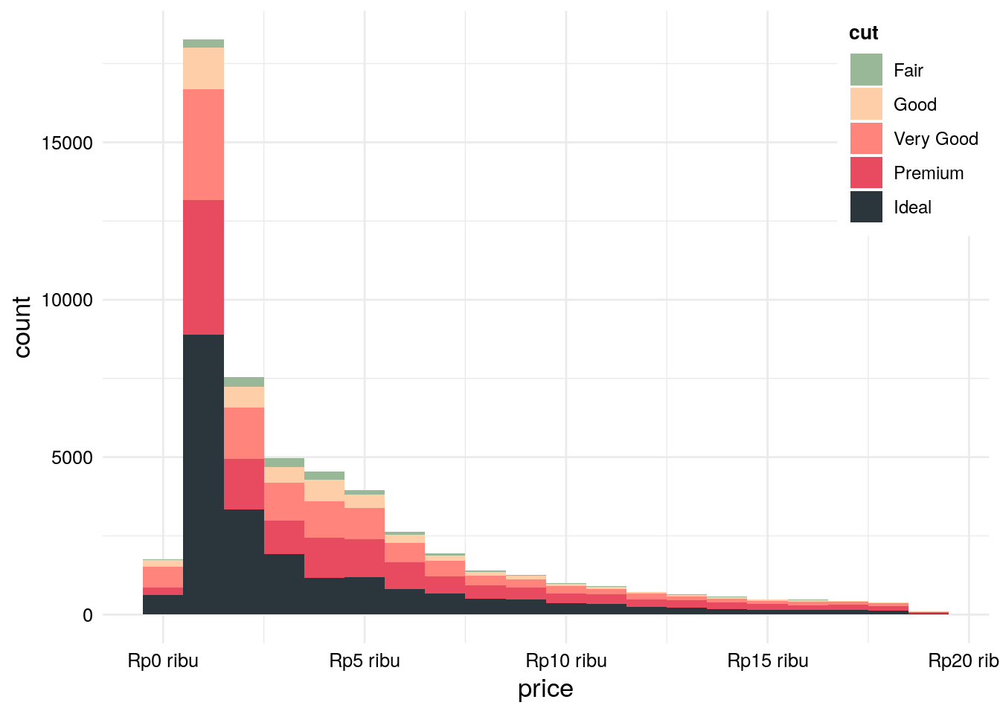

Bab 4 Project
Aktualisasi yang penulis lakukan bertujuan untuk meningkatkan efektivitas dan efisiensi grafik dalam publikasi. Grafik yang efektif adalah grafik yang mampu menyampaikan informasi. Konsumen dari grafik yang efektif dapat dengan mudah mengerti tentang apa yang ditunjukkan oleh suatu grafik. Grafik yang efisien adalah grafik yang dapat dibuat dengan waktu yang lebih singkat serta dengan biaya yang sedikit mungkin.
Untuk meningkatkan efektivitas dan efisiensi grafik dalam publikasi, penulis menuliskan 3 file.
ggplot_theme.Rberisikan tema untuk objek ggplot2.ggplot_skala.Rberisikan skala untuk sumbu x dan yggplot_pallete.Rberisikan palette untuk aesthetic color dan fill.
source(here("Script/ggplot/ggplot_tema.R"))
source(here("Script/ggplot/ggplot_palette.R"))
source(here("Script/ggplot/ggplot_skala.R"))
gg_diamonds <- ggplot(diamonds, aes(x = price)) +
geom_histogram(aes(fill = cut), binwidth = 1000) +
scale_x_continuous(labels = skl_rupiah(dari = "rupiah", "ribu")) +
scale_fill_manual(values = plt5_04) +
theme_sbd()
gg_diamonds
Lumbung atau repository aktualisasi tedapat pada https://git.bps.go.id/eus.wedo/sbd-grafik. Cara mengunduh repo tersebut terdapat pada README